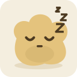
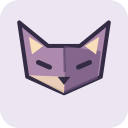
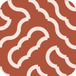
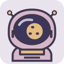
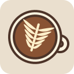
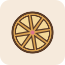
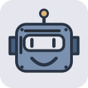

La buena compañía.
Ada MossIdeas que toman forma
Mara SolUna taza y un boceto
Brisa BotPequeñas automatizaciones
Avatares SVG para personas, equipos y bots con algo que contar. Una semilla, trece colecciones originales y un montón de personalidad.
npm i lazy-avatarsOpen source. Sin registros. Sin servicios de imágenes.

modo siesta
un poco curioso
muy a mi aire
en otra órbita
primero, café
algo de chispa
casi humano13 colecciones originales
0 dependencias en el núcleo
SVG a cualquier tamaño
MIT código y arte
Del papel plegado a una misión espacial. Elige una colección y juega con ella.
Cada avatar se genera a partir de una semilla. El mismo texto y las mismas opciones siempre dan el mismo resultado.
En ese comentario, en tu próximo proyecto o junto a tu equipo. Un detalle que hace que todo se sienta más tuyo.
Diseñadora de pequeños mundos.
Explorando nuevas ideas ↗Hoy he cambiado el avatar del proyecto. Ya parece un poquito más nuestro.☀ Un poco de personalidad
Ejemplos de interfaz con identidades ficticias.
Instala npm install lazy-avatars@1.1.2. Trece colecciones y versión estable disponibles en npm. Paquete único desde 1.1.0: un único paquete con entradas /react, /web-component, /cli y /http. Código en el repositorio.